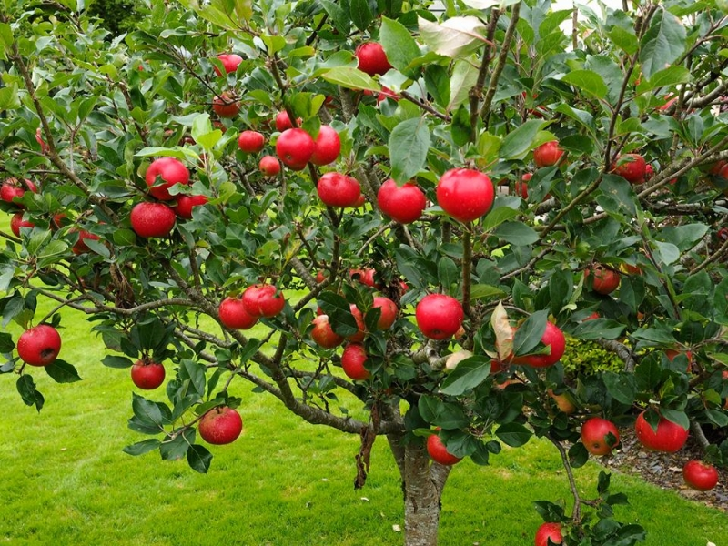

ORGANIC FOOD

Choose Organic For A
Cleaner And Healthier Environment!
A Little About Edwards And Sons Apples
Don Edwards and family have been supplying Organic & Quality Foods with delicious apples for over 20 years. Each year we receive a great variety of fresh crisp apples, and recently pears have been added to the list. Don has also supplied potatoes to OQF from time to time.
The farm is located on the beautiful Mornington Peninsula at Red Hill and they have been certified organic ‘A’ by NASAA (National Association for Sustainable Agriculture in Australia) since the early 1990’s.
They quote ‘the cleaner & healthier environment’ amongst the benefits of growing organically. However, when problems occur, such as ‘black spot’, they are only too aware of the enormous efforts they must undertake to solve the problem compared to a conventional grower just using a ‘chemical-hit’ as a solution.
OQG customers love these DELICIOUS apples & pears!